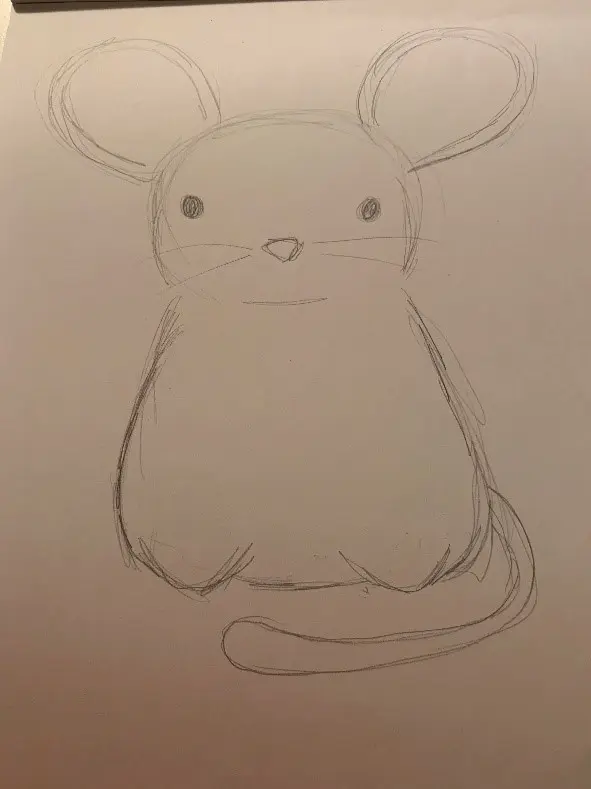
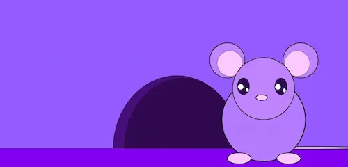

Grundlæggende animation
I animationsforløbet har vi lært at udvikle et lille spil, og derfor skulle vi lære at bruge
javascript og css animationer samt skitser, papirprototyper, designprincipper og
aktivitetsdiagrammer.
Jeg var ikke til undervisning hele dette forløb, men prøvede så godt jeg kunne at lave alle
opgaverne derhjemme. Det er ikke alt jeg har lavet men formåede at lave de fleste opgaver og et
ufærdigt spil.
Det første jeg gjorde var at brainstorme indtil jeg kom på en ide. Derefter researchede jeg hvilken stil jeg gerne ville lave og jeg fandt mit stiludgangspunkt. Jeg gik efter bouba, stort hoved lille krop store øjne og få detaljer. Så begyndte jeg at skitsere design til karakterer og lave papir prototype.
Jeg så en masse videoer for at lære hvad javascript er og hvordan man bruger det, og da jeg begyndte at forstå det indsatte jeg grundstrukturen i html. Så kiggede jeg på det catchup spil der var på Fronter. Jeg kiggede på dets java script og kopierede det ind lidt efter lidt i mit eget spil sådan at jeg forstod hvad det gjorde. Jeg indsatte så mine egne spil elementer som .svg fra illustrator.
